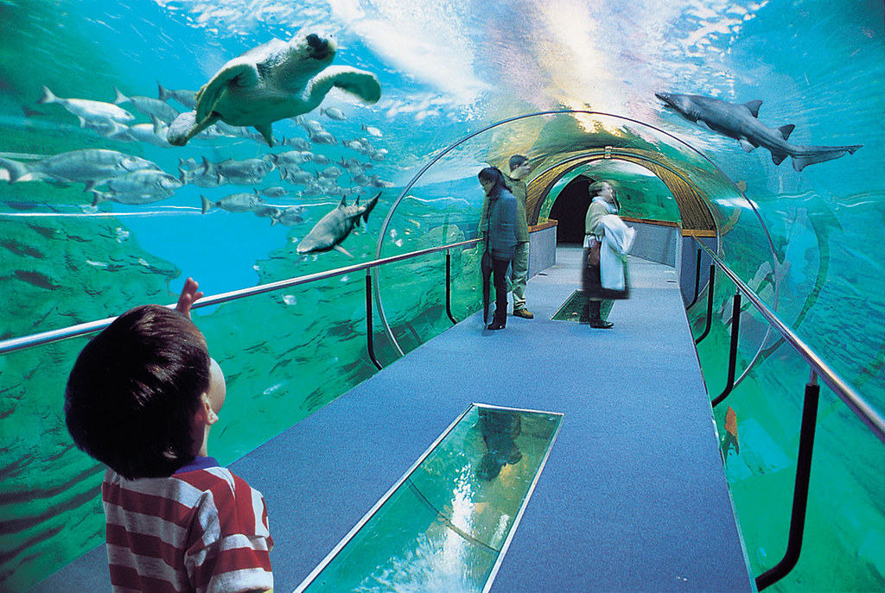

AQUARIUM GUIDED TOUR (for family members of registered participants)
9:45 – MEET AT THE AQUARIUM Your local guide will meet you at the entrance of the aquarium.
10:00 – VISIT OF THE SAN SEBASTIÁN AQUARIUM The San Sebastián Aquarium is one of the best oceanariums in Europe, consisting of a spectacular shark tunnel with a 360-degree view and a dozen aquariums which are home to jellyfish, seahorses and a variety of fish species. It also has a tactile aquarium, in which visitors can try to touch the species which live there.
CIDER HOUSE VISIT +TAPAS

GUIDED TOUR OF THE PETRITEGI CIDER-HOUSE for all registered participants
A guided tour which will let us approach the “sagardoa” world visiting those most unknown places. On this tour, you will enjoy a walk around the apple orchards and you will learn about pollination, the fermentation process, presses, etc. by watching an audiovisual documentary which illustrates how natural Petritegi cider has evolved from the 18th century to the present day.
After the tour, you can get a taste of our cider together with a red sausage “pintxo”.
During this visit, children can participate in games and traditional Basque activities, while adults enjoy the tour.
We will then enjoy some tapas at the cider house together
(All dishes will be shared in the centre of the table – this is the traditional way of eating at cider houses)
DRIVE BACK TO SAN SEBASTIÁN